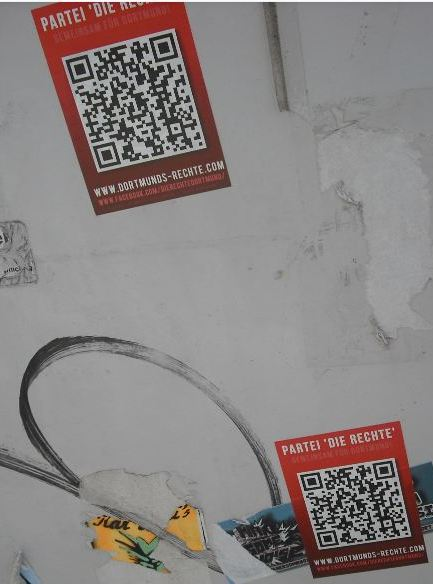

Mapec hat für kommunal die neue CD „für immer nicht.“ von das Stachel gehört
Ich liege in der Badewanne. Über die Ohrhörer kommen Geräusche in meinen Kopf. Ein offenbar schwer alkoholisierter Demonstrant behauptetet, da hätte sich „Karl Liebknecht im Grab umgedreht“ und fordert zum Angriff auf „die Bullen“ auf. Ich höre die neue CD von das Stachel, dem KBF-Revolte-Nachfolgeprojekt, das abwechselnd in Miltenberg und Kiel auftaucht. In dem ersten Stück „die Enttäuschung“ – übrigens ein schönes Wort: wir haben uns getäuscht, jetzt werden wir ent-täuscht – hören wir bereits das, was die CD weitgehend ausmacht: gesampelte O-Töne verschiedenster Ursprünge, gemischt mit elektronischen Beats. Gut ist das. Und wenn ein alter Sack wie ich (Constanze: „Mapec, du bist kein alter Sack – du bist ein Fossil!“) – wenn also so ein alter Mensch das auch goutieren kann, dann muss ja was dran sein an den Beats, den Textzitaten und dem Rest! (mehr…)
Ein Problem, das wir nicht zu verantworten haben: Immer öfter landen völlig seriöse Emails in der so genannten „Spamernte“. Für uns ist dies nicht sofort ersichtlich, da wir dazu den entsprechenden Menüpunkt aufrufen und sehr genau ansehen müssen, wobei es auch mal zu einer Fehleinschätzung kommen kann. (mehr…)
Traut man der Tageszeitung, so ist zumindest in Miltenberg der gröbste nationalistische Unfug ausgeblieben bei der öffentlichen gemeinschaftlichen Fernsehglotzerei: „Rund 50 Prozent der Besucher [beim Public Viewing zum Spiel Deutschland gegen Ghana; mb] zeigten sich solidarisch mit den Deutschlandfarben auf der Wange, Hüten und Blumenketten“ (Bote vom Untermian, 23.06.14), aber Fahnen waren wohl nicht sehr beliebt. (mehr…)
Der erste Christopher Street Day in Aschaffenburg ist nun bereits Geschichte. Und er war erfolgreicher, als die Veranstalter/innen erwartet hatten. Nur eine Gegenaktion wurde bisher bekannt: Vor dem Jugend- und Kulturzentrum (JUKUZ) – in dem die Party nach dem CSD stattfand – sprühten Unbekannte den Schriftzug „Christus Rex“ (Christus König), drei Kreuze und „No Homo“ auf den Asphalt. Es hätte schlimmer kommen können, zeugt aber davon, dass sich auch jetzt noch Widerstand gegen den CSD regt – wenn auch in diesem Fall nur aus vermutlich extremen christlichen Kreisen. Die Katholische Jugend war immerhin am CSD beteiligt! (mehr…)
Oder: Ex-Dampfplauderer der Miltenberger SPD jetzt bei der halbgaren Friedensbewegung gelandet
mmk
Wer sich in Miltenberg kommunalpolitisch interessiert und noch einige Jahre zurückerinnern kann, dem dürfte der Name Olav Müller noch bekannt sein. Mit viel Werbe-Aufwand und einem arroganten Gehabe trat der Sozialdemokrat bei der vorletzten Kommunalwahl als Bürgermeisterkandidat gegen Amtsinhaber Joachim Bieber (CSU) an. Alles wollte er besser machen, moderner und jünger. Das kam einfach deplatziert gewollt daher, überheblich und anbiedernd. Sogar innerhalb er SPD soll es Stimmen gegeben haben, diesen Müller nicht zu wählen. (mehr…)
Anlässlich der dezentralen Blockupy-Aktionstage kam es im Mai 2014 auch in Aschaffenburg zu vielfältigen Aktivitäten. Diese werden nun in einer Dokumentation festgehalten. Dazu gibt es noch drei Diskussionsbeiträge, zwei davon aus dem Umfeld von kommunal, konkret von Martin Bayer und Spacestachel.
Zum Aufrufen der Dokumentation (PDF) bitte auf die abgebildete Titelseite klicken:
Seit ein paar Tagen machen AktivistInnen und Gruppen aus dem Raum Aschaffenburg auf eine Seite sowie ein Privatprofil auf Facebook aufmerksam. Diese, namentlich „Antifa Aschaffenburg“ und „An Tifa Aschaffenburg“, geben sich szenetypisch, lassen sich aber keiner bestehenden Struktur zuordnen. Stutzig macht zudem die Tatsache, dass auf Anfragen offenbar nicht reagiert wird. Aburg.org wies bereits im Februar auf diese Merkwürdigkeit hin. Was und mit welchem Zweck dort gespielt wird, lässt sich vorerst nicht sagen, aber mit möglichen Erklärungen wird nicht gespart. Eine Anti-Antifa Aktion scheint dabei die Wahrscheinlichste zu sein. Dabei geht es in den meisten Fällen um das Sammeln von Daten möglicher AntifaschistInnen, bzw. deren SympathisantInnen. Auch das langfristige Diskreditieren von bestehenden Gruppen scheint zur gängigen Strategie der Aschaffenburger Online-Nazis zu passen.
Absolut sicher dagegen ist die Kommunal-Facebookseite, die euch über Neuigkeiten im Blog auf dem laufenden hält
Erfreut konnten wir feststelle, dass es in Aschaffenburg eine „LGBT*IQ Jugendinitative, die sich im Bereich für mehr Toleranz und Akzeptanz für Homo-, Bi- und Transsexualität engagiert“ gibt (Zitate von der Homepage rainbows-ab.de). Als Ziele werden u.a. genannt: „Als LGBT*IQ Jugendinitiative möchten wir neben dem regulären Treff auch eine erste Anlaufstelle für Personen, die sich ihrer Sexualität erst bewusst wurden/werden oder noch unsicher sind darstellen. Gruppenintern möchten wir unsere Besucher im Coming-Out-Prozess unterstützen, ihnen Raum zum Austausch geben und wenn möglich mit Rat und Tat zur Seite stehen.“
Jetzt bereitet rAinBows auch den ersten Christopher-Street-Day in Aschaffenburg vor. Wir wünschen gutes Gelingen!
 Gesehen in der Nähe der Städtischen Galerie Jesuitenkirche in Aschaffenburg
Von der NPD Aschaffenburg-Miltenberg ist nichts mehr zu hören, selbst die Homepage wird nur noch stümperhaft gepflegt und ist so ziemlich das Uninteressanteste, was es derzeit am Untermain gibt.
Allerdings tauchen jetzt Aufkleber der Partei Die Rechte auf, die von Christian Worch gegründet wurde, dem seit gefühlten 100 Jahren und in gefühlten 1.000 Nazi-Gruppen aktiven „Volksgenossen“.
Umstrukturierung? Reaktion auf ein besvorstehendes NPD-Verbot?
Das konnte ich Euch nicht vorenthalten: Auf dem Main steht heute bei Miltenberg eine Kuh, die ist lila. Und wirbt für klebrige Schokolade. Und das bei dieser schokoladenschmilzenden Hitze!
Jetzt wissen wir aber endlich, für was Werbung gut ist: Um lila Kühe nach Miltenberg zu bringen. Und darauf hat die Welt ja sowas von gewartet!
Die Voyeure haben wieder ihren Festtag: Das zweite Dirndlspingen im Raum Miltenberg wird am 22. Juni im Freibad in Bürgstadt durchgeführt. Dazu wurde von uns schon ausreichendes gesagt.
Und wer sponsort das ganze? Die Dealer von der FAUST-Brauerei, wer sonst?!
Leserbrief ans Main-Echo zu „Flüchtlinge bald wieder in der Alzenauer “Brezel”?“ in Main-Echo vom 5.6.2014
20 der insgesamt 49 Asylbewerber, die im Juli 2013 vor der Alzenauer »Brezel« abgeholt und in andere Flüchtlingsunterkünfte umziehen mussten, wünschen sich die Rückkehr nach Alzenau. Das zeigt eine gelungene Integration in die Unterkunft und teilweise auch in die Stadt. Dass eine baldige Rückkehr nach Alzenau von den Asylbewerbern erwünscht ist, versteht sich daher von selbst. Es bleibt nur zu hoffen, dass die bürokratischen Verfahren bis zur Wiederzulassung den Einzug nicht allzu lange verzögern. Hierzu bedarf es eines guten Willens, der dem langen Leerstand gerecht wird. Ist es eine Besonderheit, wenn eine Traditionsgaststätte sich in eine Asylunterkunft verwandelt? Ganz selten ist eine derartige Umwidmung in Deutschland wohl nicht. So soll die Traditionsgaststätte Möller in Haina-Löhlbach (Landkreis Waldeck-Frankenberg Nordhessen) Mitte 2014 ein Asylbewerberwohnheim werden. Das bei Vereinen beliebte Lokal schloß am 23. März dieses Jahres. Früher lebte die Gaststätte auch von Feriengästen. Eine ähnliche Entwicklung nahm der Gasthof „Adler“ in Unterelchingen (Kreis Neu-Ulm). Dort wurden Ende 2013 Asylbewerber untergebracht.
[Sollte das Foto nicht angezeigt werden, so liegt dies an Indymedia, nicht an uns. ]
2006, Fußball-WM in Deutschland, das angebliche Sommermärchen: In Miltenberg übernahm es die örtliche Werbegemeinschaft, mit einigen hundert Fahnen den Multikulturalismus zu erzwingen. Allerdings: In jede Reihe wurde auch eine deutsche Fahne gehängt, so dass die Übermacht der Einheimischen auch symbolisch demonstriert wurde.
Auch die nette Buchhändlerin sieht sich – eingeklemmt in den Konkurrenzkampf mit Weltbild und Amazon – genötigt, auf die schwarz-rot-goldene Karte zu setzen.
Foto: Gesehen in Miltenberg
Gut, die dümmsten Fans aller Vereine können auch ohne Weltmeisterschaft faschistischen Dreck propagieren; aber bei einer WM wird der Nationalismus zum Allgemeingut. … Und der Fußball, was ist mit dem Ballspiel bei der kommenden WM? Ich wünsche allen Fans vom Club, von den Kickers oder all den anderen netten Vereinen schöne Spiele, auch bei der WM. Das werden allerdings nicht unbedingt die mit deutscher Beteiligung sein, denn die Besten aus der Bundesliga spielen sowieso in anderen Nationaltrikots. Schließen wir uns also in fußballerischen Widerstandsnestern zusammen, sehen wir uns die Spiele ohne Nationalbesoffenheit an, meiden wir öffentliche Zusammenrottungen; sie könnten sich auch als gefährlich für unsere körperliche Unversehrtheit erweisen, wenn wir nicht bei jeder Schiedsrichterentscheidung parteiisch für die Bundeself grölen.
Ein Blick ins befreundete Ausland, in diesem Fall nach Rippberg, Ortsteil von Walldürn in Baden-Württemberg: Dort haben Unbekannte in einer Kunstaktion oder auch nur einer antiklerikalen Provokation direkt in der Nähe der Kirche eine aufblasbare Sex-Puppe aufgehängt (siehe Foto) – aber nicht die übliche Plastikfrau, sondern die Ausgabe, wie sie Frauen oder Schwule nutzen sollen, also mit sichtlich erigiertem Penis. Anspielung auf sexuelle Gewalt seitens des Klerus? Geiselung der Lustfeindlichkeit der katholischen Kirche? Oder doch nur grober Unfug?
Prima Sonntag, jene kostenlose Zeitung am bayerischen Untermain, die die BILD noch an Qualität zu unterbieten gedenkt, hat wieder einmal zugeschlagen. Nun entdeckte sie in der gestrigen Ausgabe völlig überrascht, dass es in Deutschland Kinderarmut gibt: (mehr…)
Suche
Du browst gerade in den Weblog-Archiven nach dem Monat Juni 2014.